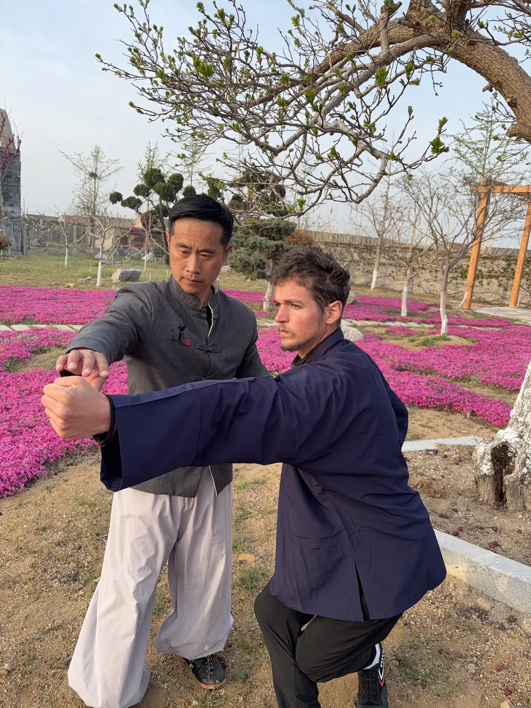

Common questions before training in China
If you're considering training in China, these are the questions most students ask before making a decision.

What is Weihai Kung Fu Academy?
It is a residential martial arts academy in Weihai, Shandong, China, offering immersive training in Kung Fu, Tai Chi, and Qigong.
Is the academy suitable for beginners?
Yes. Students of all levels are welcome, including complete beginners.
What is included in the program?
Training, accommodation, and three meals per day are included.
What styles can I study?
Training may include Tai Chi, Praying Mantis Kung Fu, Shaolin Kung Fu, Bagua Zhang, Xing Yi, Qigong, and Sanda.
Is Qigong part of the training?
Yes. Qigong is part of the academy’s traditional training approach and supports breathing, internal awareness, health, and energy circulation.
Is this only about martial technique?
No. Training also introduces students to internal practices, breath work, traditional Chinese health ideas, and the connection between body, mind, and energy circulation.
Why mention Shandong and Quanzhen Taoism?
Shandong has an important place in the history of Quanzhen Taoism, which strengthens the wider cultural and philosophical context of internal practices such as Qigong.
Is the academy only for advanced students?
No. The academy welcomes complete beginners as well as experienced martial artists.
Why choose this academy over a larger school?
The academy emphasizes personalised instruction, smaller groups, and a more immersive training environment.
This page answers the practical questions most students have before deciding to train in China.